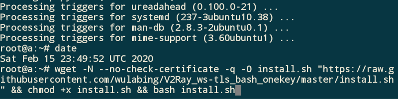
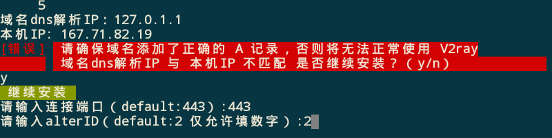
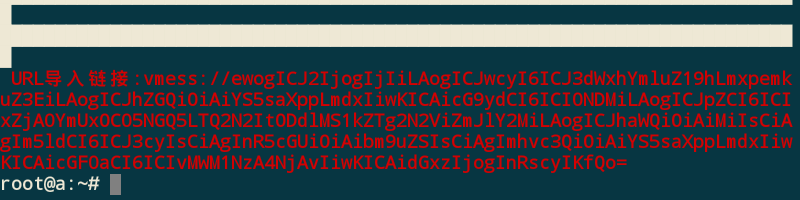
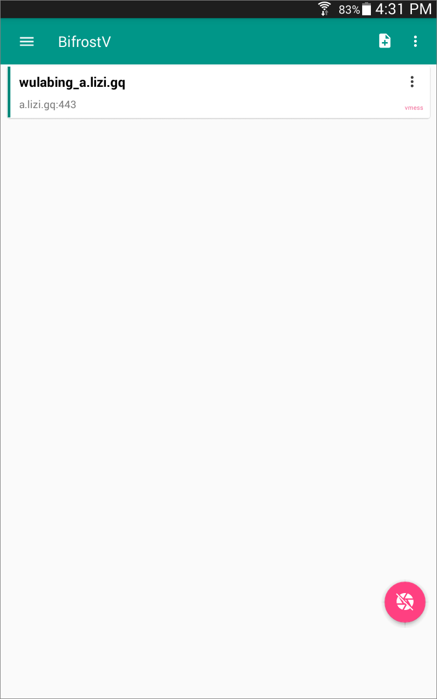
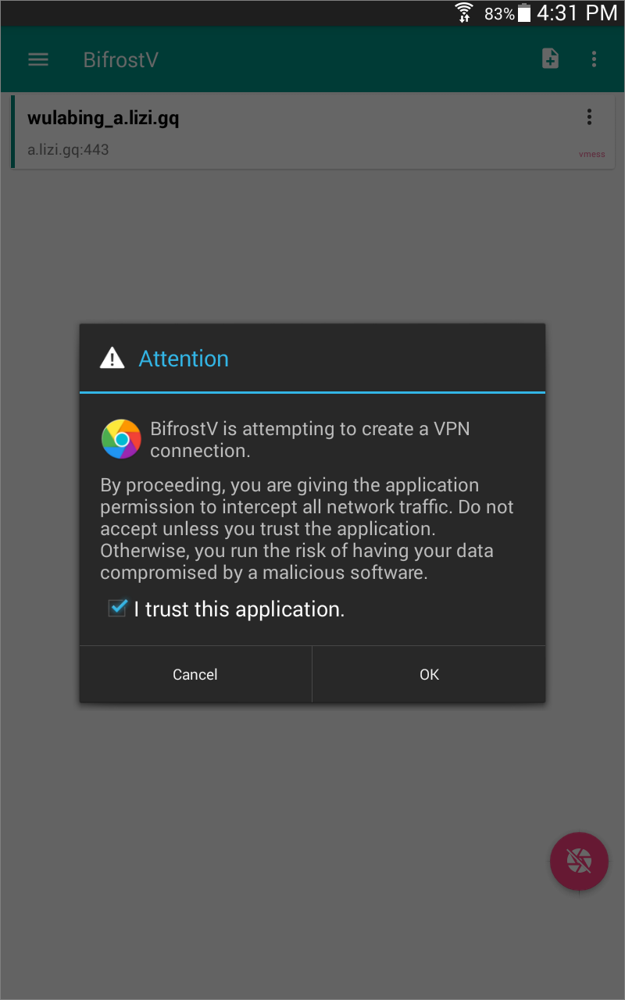
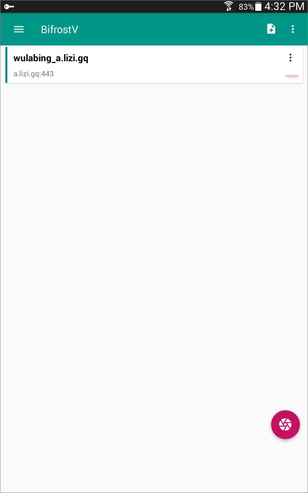
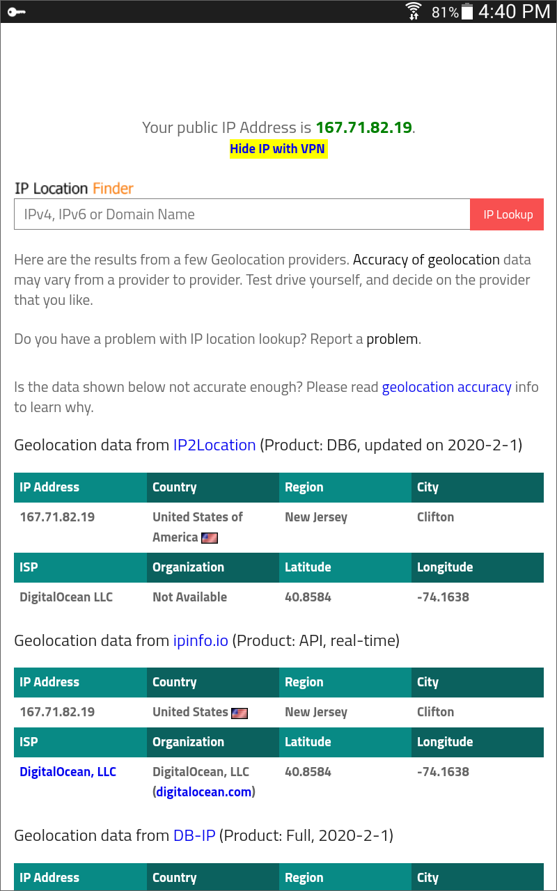

One-Click V2Ray+WS+TLS Script
V2Ray is an open-source network proxy tool that can help you better enjoy the Internet. It can be used on Windows, macOS, Android, iOS, and Linux clients. V2Ray offers many sophisticated features. However, it can be difficult for beginners to configure.
This tutorial introduces a one-click installation script that does much of the work of V2Ray server configuration for you.
Even though this tutorial is aimed at beginners, the developer still recommends that you make some effort to understand the principles of V2Ray. Documentation is available in Chinese, English, Russian, Korean, Farsi, and Vietnamese at https://v2ray.com. You should also be willing to learn at least the basics of managing a Linux server.
At the time of writing, the script supports Debian 9+, Ubuntu 18.04+, and CentOS 7. In this tutorial we will use an Ubuntu 18.04 server. The client is an Android device.
1. Get Domain Name
You will need to acquire a domain name before you run this script. If you want to give a good impression, remember that paid domain names look more professional than free ones. You can get good prices from Namesilo. If you still want a free domain name, you can get one from Freenom. When you create your domain, Freenom will check that the street address you give is consistent with your workstation’s IP address.
For the rest of this tutorial, we use the example domain name
of lizi.gq.
2. Get VPS
You will also need a virtual private server (VPS). There are hundreds of companies that provide VPSs. Here’s a few of the well-known ones:
Of course, you can choose a different provider if you like.
3. Create DNS Record
On the Internet, people refer to websites by hostnames.
A hostname is effectively a subdivision of your domain name.
For example, a.example.com and b.example.com are both
hostnames within the same domain name of example.com.
Hostnames are also referred to as fully qualified domain names
(FQDN).
The Internet itself directs traffic between Internet Protocol (IP)
addresses. This necessitates the Domain Name System (DNS), which maps
hostnames to server IP addresses.
The most important DNS record is called a DNS A record.
At a minimum, you will need to create one DNS A record,
connecting your hostname and your server. Unless you are using a separate
DNS service, you should create the DNS A record
at your domain name registrar — either
https://www.freenom.com
or some other domain name registrar.
In the example in this tutorial, we created one DNS A record.
It mapped the subdomain a of the domain lizi.gq
— in other words, the a.lizi.gq hostname —
to our VPS’s IP address.
4. Terminal Emulator
To log in to your server, you need a terminal emulator that supports Secure Shell (SSH) sessions.
If you are using Linux or macOS computer as your workstation, you already have a built-in terminal emulator that you can use to SSH into your server.
If you are using Windows as your workstation, install PuTTY from https://www.chiark.greenend.org.uk/~sgtatham/putty or XSHELL6 from https://www.netsarang.com/en/xshell.
If you are using Android on your phone as your workstation, install JuiceSSH from Google Play Store or ApkPure.
On iPad or iPhone, install an SSH client such as Termius.
5. SSH into Server
Some VPS providers give you root access to your server right away. Others give you a non-root user id and, if you want root access, you must log in as the non-root user and then switch users.
Suppose first you are logged in as root. Some providers force you to change your password immediately when you log in for the first time. If you are logged in as root and have not been forced to change the root password, then change it anyway. Type, or copy and paste, the command below into your terminal emulator:
passwd root
The second possibility is that you are logged in as a non-root user. Set the root password and switch to root as follows. Type or copy and paste each of the two commands below into your terminal emulator.
sudo passwd root
su -
6. Prepare VPS
If you’ve got this far, you should now be logged in as root.
We have a little preparation to do before running the one-click installation script. Type or copy and paste each of these commands in turn into your terminal emulator.
Get your existing server software up to date:
apt update && apt upgrade -y
Also remove any redundant packages:
apt autoremove
Install a package that will ban anyone who repeatedly tries to log in using an incorrect password:
apt install fail2ban
Install a package for getting the one-click script from the web:
apt install wget
V2Ray needs accurate times on both server and client. Display the system date, time, timezone, and year with the command:
date
Note that many servers use Coordinated Universal Time (UTC) as the time zone.
If the time is not correct, then set it now. For example, to set it to
3:45 p.m. in the server clock’s timezone,
use the date command again like this:
date +%T -s "15:45:00"
7. The One Click
Now we come to the one-click script. Copy and paste the following command from this tutorial into your terminal emulator. This is all one long command, so when you select and copy, make sure you select all of the command:
wget -N --no-check-certificate -q -O install.sh "https://raw.githubusercontent.com/wulabing/V2Ray_ws-tls_bash_onekey/master/install.sh" && chmod +x install.sh && bash install.sh
Here is a demonstration of how this might appear in your terminal emulator. Remember it is all one command, even though it spans several lines of the display.
8. Respond to Prompts
The script displays a menu offering the following options:
—————————————— 安装向导 ——————————————
0. 升级 脚本
1. 安装 V2Ray (Nginx+ws+tls)
2. 安装 V2Ray (http/2)
3. 升级 V2Ray core
—————————————— 配置变更 ——————————————
4. 变更 UUID
5. 变更 alterid
6. 变更 port
7. 变更 TLS 版本(仅ws+tls有效)
—————————————— 查看信息 ——————————————
8. 查看 实时访问日志
9. 查看 实时错误日志
10. 查看 V2Ray 配置信息
—————————————— 其他选项 ——————————————
11. 安装 4合1 bbr 锐速安装脚本
12. 安装 MTproxy(支持TLS混淆)
13. 证书 有效期更新
14. 卸载 V2Ray
15. 更新 证书crontab计划任务
16. 退出
In English, these options would read:
—————————————— Installation Wizard ——————————————
0. Upgrade script
1. Install V2Ray (Nginx+WS+TLS)
2. Install V2Ray (HTTP/2)
3. Upgrade V2Ray core
—————————————— Configuration Change —————————————
4. Change UUID
5. Change alterid
6. Change port
7. Change TLS version (only WS+TLS is valid)
—————————————— View information —————————————————
8. View real-time access log
9. View real-time error log
10. View V2Ray configuration information
—————————————— Other options ————————————————————
11. Install 4-in-1 BBR quick install script
12. Install MTproxy (supports TLS obfuscation)
13. Certificate validity period update
14. Uninstall V2Ray
15. Update certificate crontab scheduled task
16. Exit
For a beginner on a new server, choose option 1 to install
V2Ray with an Nginx frontend and WS+TLS protocol.
The next question asks you to confirm that the server time clock is accurate within plus or minus 3 minutes. It uses Beijing time (CST).
请确认时间是否准确,误差范围±3分钟(Y/N)
Please confirm that the time is accurate; the error range is ±3 minutes (Y/N)
Assuming it is correct, put y for Yes and press
Enter, like this:
Now you are asked to enter your fully qualified domain name,
also known as your hostname.
The example given in the prompt is www.wulabing.com.
请输入你的域名信息(eg:www.wulabing.com):
Please enter your domain information (e.g. www.wulabing.com):
Enter your FQDN, which in our example is a.lizi.gq,
and press Enter.
If the DNS resolution does not match the IP address of the server, you will see a warning. It asks you if you want to proceed.
请确保域名添加了正确的 A 记录，否则将无法正常使用 V2ray
域名dns解析IP 与 本机IP 不匹配 是否继续安装？
Please make sure the domain name has the correct A record, otherwise V2Ray
will not work properly.
The domain name DNS resolution IP does not match the local IP.
Do you want to continue the installation?
If you are confident that the DNS resolution
will be eventually be correct, you can type y
for Yes, and press Enter.
The next question asks on which port number your server will accept incoming connections.
请输入连接端口（default:443）:
Please enter the connection port (default 443):
It is strongly recommended that you use the default port 443
as the connection port, since this is consistent with HTTPS port usage.
Now you are asked how many alternative IDs you want to use.
This parameter is mainly used to enhance anti-detection capabilities.
Theoretically, the larger the alterId, the better,
but the larger the value the more memory it uses on the server.
请输入alterID（default:2 仅允许填数字）:
Please enter alterID (default 2, must be numeric):
It is recommended that you go with the suggested default of 2.
The script now goes ahead and builds the latest version of V2Ray direct from the source. This takes the most time, 10 minutes or so, depending on your server.
Toward the end, the script asks you which versions of Transport Layer Security (TLS) you want to support.
请选择支持的 TLS 版本（default:3）:
请注意,如果你使用 Quantaumlt X / 路由器 / 旧版 Shadowrocket / 低于 4.18.1 版本的 V2ray core 请选择 兼容模式
1: TLS1.1 TLS1.2 and TLS1.3（兼容模式）
2: TLS1.2 and TLS1.3 (兼容模式)
3: TLS1.3 only
Please select a supported TLS version (default 3):
Please note that if you use Quantaumlt X / Router / Legacy Shadowrocket / V2ray core lower than 4.18.1 please select compatibility mode
1: TLS1.1 TLS1.2 and TLS1.3 (compatibility mode)
2: TLS1.2 and TLS1.3 (compatibility mode)
3: TLS1.3 only
TLS version 1.3 is the newest, but it is not supported by every possible client.
To allow for a broader range of client devices, we will choose
option 2. Press Enter.
At the conclusion of the script, the
URL import link (URL导入链接) is displayed.
It begins with the characters vmess:// as shown in the
screenshot below displayed in red.
If you lose the URL import link, you can redisplay it with the command:
cat ~/v2ray_info.inf
Copy this entire URL beginning from vmess://
and going to the end (fQo= in our example) to your clipboard.
We will import it into the client in a moment.
Meanwhile, notice that the script has created an Nginx website
on your server in the directory /home/wwwroot/3DCEList.
If you visit your host in a browser
(https://a.lizi.gq in our example)
you will see this website.
9. Install V2Ray Client
V2Ray needs accurate times on both server and client, so make sure the system time on your client device is correct.
Our screenshots come from using BifrostV on an Android device. Install BifrostV from Google Play Store or ApkPure.
(Clients for other devices are listed at https://v2ray.com/en/awesome/tools.html.)
In BifrostV, tap the plus sign
at the top right of the screen to add a new V2Ray server profile.
Select Import. Select Import from URL.
Paste the URL from vmess:// and going right to the very end
from your clipboard. Tap OK.
The new V2Ray server profile appears in your profile list. Tap the round button at the bottom right of your screen to connect.
Depending on which version of Android you are running, you will get a message saying that BifrostV is attempting to create a VPN connection. Check the box to say that you trust this application, and tap OK.
After a few seconds, the button at the bottom right of your screen turns a brighter color to indicate that you are now connected to that V2Ray server.
10. End-to-End Test
Open a browser and visit https://www.iplocation.net.
You should see the location of your server, not the location of your client.
11. Keep Your Server Up to Date
The script supports automatic generation of a Let’s Encrypt SSL certificate, which is valid for 90 days. In theory, the automatically generated certificate supports automatic renewal. At 3 a.m. every Sunday, Nginx will automatically restart to allow the scheduled task of checking for renewal of the certificate. During this period, clients cannot connect to the server. The estimated duration of the maintenance outage is anything from a few seconds to a few minutes.
Keeping your server software up to date needs to be done manually. Once a week or so, log on to your server and issue the command:
apt update && apt upgrade -y
12. Get Support
If you have a problem, SSH into your server to take a look at the logs. To view the V2Ray error log, enter the command:
tail /var/log/v2ray/error.log
To view the Nginx error log, enter the command:
tail /etc/nginx/logs/error.log
You can ask questions on the Telegram communication group at https://t.me/wulabing_v2ray.
If you still have a problem, you can create an issue on https://github.com/wulabing/V2Ray_ws-tls_bash_onekey/issues.